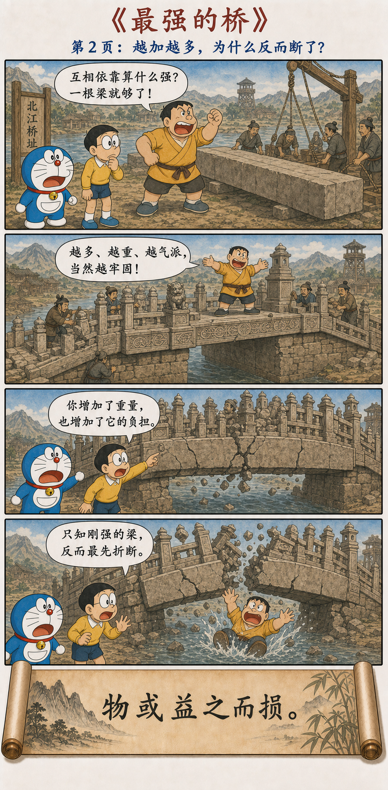
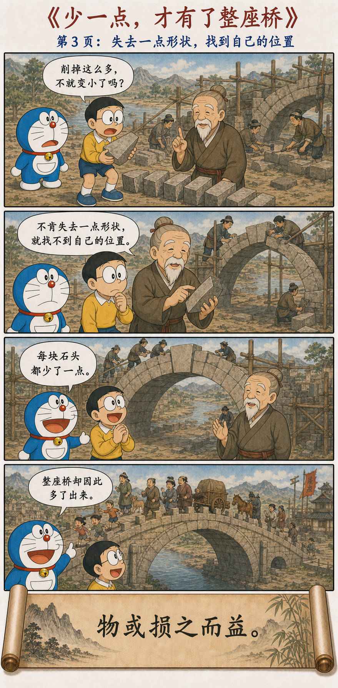

从万物如何生成，到人为何不可逞强
From the Birth of Things to the Failure of Brute Strength
道生一，一生二，二生三，三生万物。
万物负阴而抱阳，冲气以为和。
人之所恶，唯孤、寡、不谷，而王公以为称。
故物或损之而益，或益之而损。
人之所教，我亦教之：
强梁者不得其死，吾将以为教父。
The Dao gives birth to one; one gives birth to two; two give birth to three; three give birth to all things. All things carry yin and embrace yang; through their mingling breath, harmony arises. People dislike being orphaned, widowed, or unworthy, yet rulers use these words of themselves. Thus some things gain through loss, while others lose through gain. What others teach, I also teach: the violently overbearing do not meet a natural end. I take this as a fundamental teaching.
世界不是由孤立的东西组成，而由关系生成
The World Is Generated Through Relations, Not Isolated Things
道使一个整体出现；整体内部生出差异；差异彼此作用，形成新的关系；万物便由此展开。这里的“一、二、三”不是一份机械的数字清单，而是在描述从未分化、到对立、再到相互作用的生成过程。
The Dao brings forth a whole; difference emerges within it; differences interact and form a new relation; from this, the myriad things unfold. One, two, and three are not a mechanical list, but a movement from the undivided to difference and then to generative interaction.
万物都同时承受阴与阳。所谓“和”，不是消灭其中一端，也不是把两端磨成一样，而是让不同力量进入一种能够继续生成的结构。
All things bear both yin and yang. Harmony does not erase one side or grind both into sameness. It places different forces in a structure capable of further creation.
一座桥，为什么不会塌
Why Does an Arch Bridge Stand?



“三”不是第三件孤立的东西，而是两者之间发生了什么
The Third Is Not Another Isolated Thing, but What Happens Between Two
拱桥的两边都向内传递压力。若只看方向，它们似乎彼此冲突；但拱顶石把这些力量组织起来，压力沿着拱圈传向桥墩，原本可能使石头坠落的重量，反而成为桥得以站立的条件。
Both sides of an arch transmit pressure inward. Seen only as directions, they appear to conflict. Yet the keystone organizes those forces and carries compression along the arch into the supports. The weight that could make stones fall becomes a condition of the bridge's stability.
两岸是“二”，两岸之间形成的受力关系可以看作“三”，而桥通以后出现的人群、货物与生活，则像由这个关系展开的“万物”。创造并不只来自某一个对象，也来自对象之间正确的连接。
The two banks are the two; the load-bearing relation between them resembles the three; the people, goods, and daily life crossing afterward resemble the myriad things unfolding from that relation. Creation belongs not only to objects, but also to connections rightly formed.
有些东西，任何一方都不能单独创造；
只有关系建立以后，它才第一次出现。
Some things can be created by neither side alone. They appear for the first time only when a relation is formed.
和不是静止的平均，也不是回避冲突
Harmony Is Neither Static Averaging nor the Avoidance of Conflict
如果一座拱桥完全没有压力，它也就不再是一座工作的拱桥。桥的稳定不是因为力量消失了，而是因为力量得到传递、分担与约束。“冲”保留了相遇和激荡，“和”则说明这种激荡没有走向彼此毁灭。
If an arch carried no compression, it would not be a working arch. Stability does not come from the disappearance of force, but from its transmission, distribution, and constraint. Mingling preserves encounter and tension; harmony keeps that tension from becoming mutual destruction.
放在人际关系中，和也不等于所有人保持沉默。真正的合作允许不同意见出现，同时建立一种结构，使批评能够修正方案，而不是摧毁对方；使分工能够发挥差异，而不是制造高低贵贱。
In human relations, harmony does not require silence. Genuine cooperation permits disagreement while building a structure in which criticism improves a plan rather than destroys a person, and division of labor uses differences without turning them into ranks of worth.
得失要看它改变了什么结构
Gain and Loss Depend on the Structure They Change
一块石头被削掉棱角，从自身尺寸看是“损”；但它因此能够进入拱圈，与别的石头彼此咬合，从整体功能看却是“益”。相反，胖虎给桥添加更多重量和装饰，看似处处在“益”，却使石梁承担超过能力的负荷，最终成为“损”。
A stone trimmed at its edges suffers loss in size, yet gains a place within an interlocking arch. Gian adds weight and ornament everywhere, but overload turns apparent gain into structural loss.
所以老子并不是说吃亏必然有福，也不是反对所有增长。他提醒我们，不要只数眼前增加了多少，还要追问：这次增加是否破坏了承载它的条件？这次减少是否为新的关系腾出了位置？
Laozi is not promising that every loss becomes fortune, nor opposing all growth. He asks whether an addition damages the conditions that carry it, and whether a reduction makes room for a new relation.
处在高位，更要记得自己并不完整
The Higher the Position, the More Important It Is to Remember One's Incompleteness
“孤、寡、不谷”本是人们不喜欢的卑下称呼，王公却用来自称。它至少构成一个有意的反转：越处尊位，越要以不圆满自警；若把自己想成无所依赖、无所欠缺的绝对中心，便很容易把关系变成单方面的服从。
Orphaned, alone, and unworthy were undesirable terms, yet rulers used them for themselves. The reversal is deliberate: the higher the position, the more necessary the reminder of incompleteness. A ruler who imagines himself self-sufficient turns relations into one-way obedience.
真正能够承载众人的领导者，不必假装自己拥有全部答案。他承认知识有限、权力需要约束、成果依赖他人，于是不同的人才有可能进入共同结构。
A leader capable of carrying others need not pretend to possess every answer. By admitting limited knowledge, constrained power, and dependence on others, that leader makes room for different people within a shared structure.
强大没有错，只有一种姿态才危险
Strength Is Not the Problem; Rigidity Is
“强梁”不是普通的坚强，而是横暴、强硬、只凭力量压服别人。漫画里的直梁也是一个双关：它拒绝分担，只想独自跨越河流；它不能调整力量的路径，于是外表最强，结构却最脆弱。
The violently overbearing are not merely strong. They rely on force to subdue others. The rigid beam makes the same point visually: refusing distribution, it tries to span the river alone. Unable to redirect force, it looks strongest while remaining structurally fragile.
一个人若必须永远正确，便失去修正的能力；一个组织若只允许命令向下传递，坏消息便无法回来；一个国家若把每次分歧都理解成必须压倒的挑战，便会不断增加维持强势的成本。问题不是拥有力量，而是力量拒绝进入关系。
A person who must always be right loses the ability to correct. An organization that permits only downward commands prevents bad news from returning. A state that treats every disagreement as a challenge to crush raises the cost of dominance without end. The problem is not power, but power refusing relationship.
平衡不是永远五五开，谦下也不是自我消失
Balance Is Not Permanent Equality, and Humility Is Not Self-Erasure
拱桥的每块石头承受的力量并不完全相同，阴阳也不是凡事各占一半。“和”关注的是整体是否能够继续运转、差异是否能够彼此转化，而不是用一把尺子把所有部分切成同样大小。
Not every stone in an arch carries identical force, and yin and yang do not mean that everything divides equally. Harmony asks whether the whole can continue and differences can transform one another, not whether every part is cut to the same size.
同样，“损之而益”不要求一个人不断牺牲自己。健康的损，是放下妨碍整体的过度、虚荣和僵硬；若一段关系只让一方持续被削减，另一方持续增加，那不是和，而是失衡。
Gain through loss does not demand endless self-sacrifice. Healthy reduction removes excess, vanity, and rigidity that obstruct the whole. If one side is continually diminished while the other continually grows, the relation is not harmonious but unbalanced.
不要只问我得到了什么，也问我们共同生成了什么
Ask Not Only What I Gained, but What We Created Together
讨论时少坚持一句，也许不是输，而是让更好的方案出现；写作时删去一段喜爱的文字，也许不是浪费，而是让文章结构成立；管理时少做一个替下属决定的动作，也许不是失控，而是让团队长出判断能力。
Yielding one sentence in discussion may allow a better plan to emerge. Cutting a beloved paragraph may let an essay find its structure. Making one fewer decision for a colleague may allow a team to develop judgment.
判断损益时，把时间尺度放长，把观察范围扩大。真正重要的，不只是某个部分有没有变多，而是整个系统是否更有生命力、更能容纳差异，也更能承受变化。
Judge gain and loss across a longer time and a wider field. What matters is not merely whether one part grows, but whether the system becomes more alive, more capable of holding difference, and more resilient under change.
独强者易折，相成者乃久
What Stands Alone Breaks; What Sustains Another Endures
第四十二章从宇宙生成讲到政治谦下，又从损益反转讲到强暴者的结局，贯穿其中的是同一条线索：没有事物只靠孤立的自己长久存在。差异形成关系，关系产生万物；愿意调整自身，才能进入更大的整体。
Chapter 42 moves from cosmic generation to political humility, and from reversals of gain and loss to the fate of the violent. One thread connects them: nothing endures through isolation alone. Difference forms relations, relations generate the world, and adjustment allows each part to enter a larger whole.
不是谁压倒谁，桥才出现；
是两边都把力量交给关系，桥才出现。
The bridge does not appear because one side defeats the other. It appears because both sides entrust their force to a relation.
原典与注释
Primary Texts and Commentaries
The Wang Bi edition and commentary on the Daodejing, and the Chinese Text Project edition.